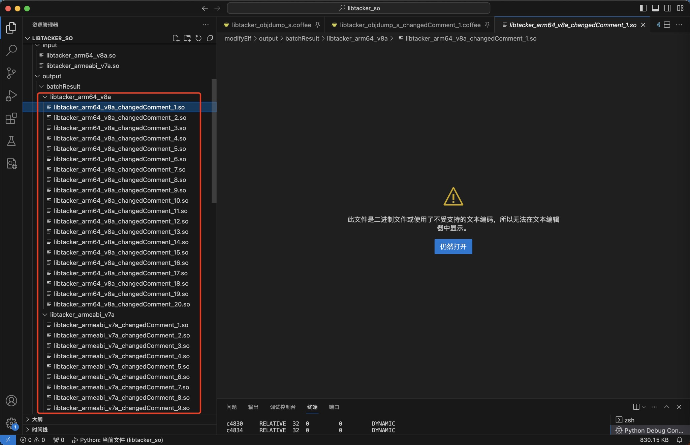
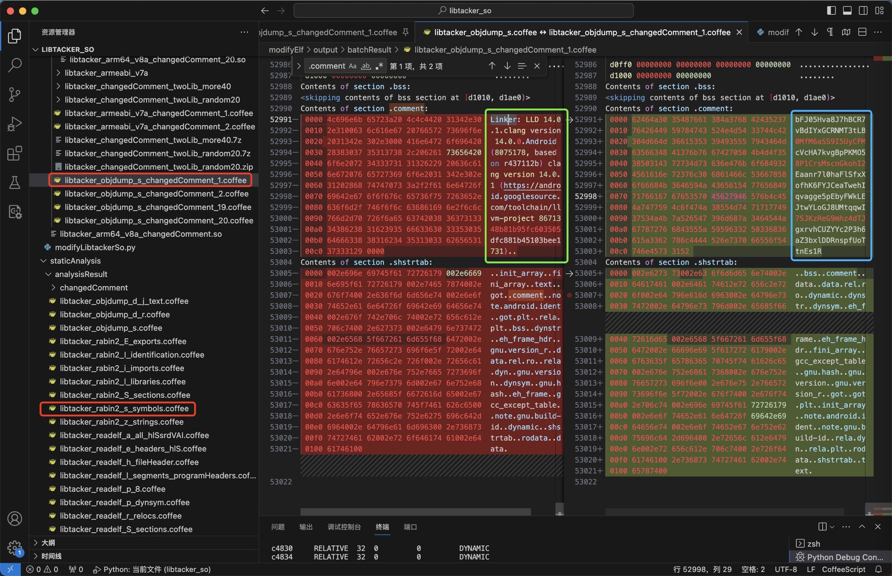

LIEF修改ELF的libtacker.so
此处举例说明LIEF的用法：
- 用LIEF解析修改ELF格式的so库文件：
libtacker.so
基本用法：打印解析后对象的信息
代码：
import lief
libtackerObj = lief.parse('modifyElf/input/libtacker_arm64_v8a.so')
print("libtackerObj=", libtackerObj)
输出：
➜ libtacker_so python modifyElf/modifyLibtackerSo.py
intputElfFile= modifyElf/input/libtacker_armeabi_v7a.so
inputFileName= libtacker_armeabi_v7a.so
pureFileName=%s, fileExt=%s ('libtacker_armeabi_v7a', '.so')
Loaded file: modifyElf/input/libtacker_armeabi_v7a.so
libtackerElf= Header
======
Magic: 7f 45 4c 46
Class: CLASS32
Endianness: LSB
Version: CURRENT
OS/ABI: SYSTEMV
ABI Version: 0
Machine type: ARM
File type: DYNAMIC
Object file version: CURRENT
Entry Point: 0xb9c8
Program header offset: 0x34
Section header offset: 815008
Processor Flag: 83886592 SOFT_FLOAT EABI_VER5
Header size: 52
Size of program header: 32
Number of program header: 9
Size of section header: 40
Number of section headers: 27
Section Name Table idx: 26
Sections
========
NULL 0 0 0 0
.note.android.ident NOTE 154 98 154 1.09412 ALLOC LOAD NOTE
.note.gnu.build-id NOTE 1ec 24 1ec 4.13606 ALLOC LOAD NOTE
.dynsym DYNSYM 210 6d0 210 3.54702 ALLOC LOAD
.gnu.version HIOS 8e0 da 8e0 1.48975 ALLOC LOAD
.gnu.version_r GNU_VERNEED 9bc 40 9bc 2.16157 ALLOC LOAD
.gnu.hash GNU_HASH 9fc 1ec 9fc 6.3602 ALLOC LOAD
.hash HASH be8 370 be8 1.38896 ALLOC LOAD
.dynstr STRTAB f58 b8f f58 4.66594 ALLOC LOAD
.rel.dyn REL 1ae8 2dd0 1ae8 3.36673 ALLOC LOAD
.ARM.exidx ARM_EXIDX 48b8 1ad8 48b8 5.18866 ALLOC LINK_ORDER LOAD ARM_UNWIND
.rel.plt REL 6390 120 6390 3.54485 ALLOC INFO_LINK LOAD
.ARM.extab PROGBITS 64b0 334c 64b0 4.80098 ALLOC LOAD
.rodata PROGBITS 97fc 21c7 97fc 5.26982 ALLOC MERGE STRINGS LOAD
.text PROGBITS b9c8 b72c4 b9c8 6.55022 ALLOC EXECINSTR LOAD
.plt PROGBITS c2c90 260 c2c90 3.78829 ALLOC EXECINSTR LOAD
.data.rel.ro PROGBITS c3ef0 1790 c2ef0 4.42226 WRITE ALLOC LOAD GNU_RELRO
.fini_array FINI_ARRAY c5680 8 c4680 1.75 WRITE ALLOC LOAD GNU_RELRO
.init_array INIT_ARRAY c5688 114 c4688 -0 WRITE ALLOC LOAD GNU_RELRO
.dynamic DYNAMIC c579c e8 c479c 3.17459 WRITE ALLOC LOAD DYNAMIC GNU_RELRO
.got PROGBITS c5884 70 c4884 3.63662 WRITE ALLOC LOAD GNU_RELRO
.got.plt PROGBITS c58f4 9c c48f4 1.98777 WRITE ALLOC LOAD GNU_RELRO
.data PROGBITS c6990 2410 c4990 7.22773 WRITE ALLOC LOAD
.bss NOBITS c8da0 22d c6da0 5.11609 WRITE ALLOC LOAD
.comment PROGBITS 0 c6 c6da0 5.05236 MERGE STRINGS
.ARM.attributes ARM_ATTRIBUTES 0 3c c6e66 4.587
.shstrtab STRTAB 0 fe c6ea2 4.2632
Segments
========
PHDR r-- 34 34 34 120 120 4
LOAD r-x 0 0 0 c2ef0 c2ef0 1000
Sections in this segment :
.note.android.ident
.note.gnu.build-id
.dynsym
.gnu.version
.gnu.version_r
.gnu.hash
.hash
.dynstr
.rel.dyn
.ARM.exidx
.rel.plt
.ARM.extab
.rodata
.text
.plt
LOAD rw- c2ef0 c3ef0 c3ef0 1aa0 1aa0 1000
Sections in this segment :
.data.rel.ro
.fini_array
.init_array
.dynamic
.got
.got.plt
LOAD rw- c4990 c6990 c6990 2410 263d 1000
Sections in this segment :
.data
.bss
DYNAMIC rw- c479c c579c c579c e8 e8 4
Sections in this segment :
.dynamic
GNU_RELRO r-- c2ef0 c3ef0 c3ef0 1aa0 2110 1
Sections in this segment :
.data.rel.ro
.fini_array
.init_array
.dynamic
.got
.got.plt
GNU_STACK rw- 0 0 0 0 0 0
NOTE r-- 154 154 154 bc bc 4
Sections in this segment :
.note.android.ident
.note.gnu.build-id
ARM_UNWIND r-- 48b8 48b8 48b8 1ad8 1ad8 4
Sections in this segment :
.ARM.exidx
Dynamic entries
===============
NEEDED b71 liblog.so
NEEDED b7b libm.so
NEEDED b5b libdl.so
NEEDED b69 libc.so
SONAME b83 libforce.so
FLAGS 8 BIND_NOW
FLAGS_1 1 NOW
REL 1ae8
RELSZ 2dd0
RELENT 8
RELCOUNT 573
JMPREL 6390
PLTRELSZ 120
PLTGOT c58f4
PLTREL 11
SYMTAB 210
SYMENT 10
STRTAB f58
STRSZ b8f
GNU_HASH 9fc
HASH be8
INIT_ARRAY c5688 [0x0, 0x0, 0x0, 0x0, 0x0, 0x0, 0x0, 0x0, 0x0, 0x0, 0x0, 0x0, 0x0, 0x0, 0x0, 0x0, 0x0, 0x0, 0x0, 0x0, 0x0, 0x0, 0x0, 0x0, 0x0, 0x0, 0x0, 0x0, 0x0, 0x0, 0x0, 0x0, 0x0, 0x0, 0x0, 0x0, 0x0, 0x0, 0x0, 0x0, 0x0, 0x0, 0x0, 0x0, 0x0, 0x0, 0x0, 0x0, 0x0, 0x0, 0x0, 0x0, 0x0, 0x0, 0x0, 0x0, 0x0, 0x0, 0x0, 0x0, 0x0, 0x0, 0x0, 0x0, 0x0, 0x0, 0x0, 0x0, 0x0]
INIT_ARRAYSZ 114
FINI_ARRAY c5680 [0xb9dc, 0xb9c8]
FINI_ARRAYSZ 8
VERSYM 8e0
VERNEED 9bc
VERNEEDNUM 2
NULL 0
Dynamic symbols
===============
NOTYPE LOCAL 0 0 * Local *
__cxa_finalize FUNC GLOBAL 0 0 LIBC (2)
__cxa_atexit FUNC GLOBAL 0 0 LIBC (2)
__android_log_print FUNC GLOBAL 0 0 * Global *
__stack_chk_fail FUNC GLOBAL 0 0 LIBC (2)
__stack_chk_guard OBJECT GLOBAL 0 0 LIBC (2)
__strncpy_chk2 FUNC GLOBAL 0 0 LIBC (2)
strncpy FUNC GLOBAL 0 0 LIBC (2)
strncat FUNC GLOBAL 0 0 LIBC (2)
pthread_self FUNC GLOBAL 0 0 LIBC (2)
malloc FUNC GLOBAL 0 0 LIBC (2)
free FUNC GLOBAL 0 0 LIBC (2)
posix_memalign FUNC GLOBAL 0 0 LIBC (2)
abort FUNC GLOBAL 0 0 LIBC (2)
vfprintf FUNC GLOBAL 0 0 LIBC (2)
fputc FUNC GLOBAL 0 0 LIBC (2)
vasprintf FUNC GLOBAL 0 0 LIBC (2)
__assert2 FUNC GLOBAL 0 0 LIBC (2)
__sF OBJECT GLOBAL 0 0 LIBC (2)
strlen FUNC GLOBAL 0 0 LIBC (2)
realloc FUNC GLOBAL 0 0 LIBC (2)
__strlen_chk FUNC GLOBAL 0 0 LIBC (2)
memchr FUNC GLOBAL 0 0 LIBC (2)
__vsnprintf_chk FUNC GLOBAL 0 0 LIBC (2)
pthread_mutex_lock FUNC GLOBAL 0 0 LIBC (2)
calloc FUNC GLOBAL 0 0 LIBC (2)
pthread_mutex_unlock FUNC GLOBAL 0 0 LIBC (2)
strcmp FUNC GLOBAL 0 0 LIBC (2)
pthread_getspecific FUNC GLOBAL 0 0 LIBC (2)
memset FUNC GLOBAL 0 0 LIBC (2)
pthread_once FUNC GLOBAL 0 0 LIBC (2)
pthread_setspecific FUNC GLOBAL 0 0 LIBC (2)
memcpy FUNC GLOBAL 0 0 LIBC (2)
pthread_key_delete FUNC GLOBAL 0 0 LIBC (2)
pthread_key_create FUNC GLOBAL 0 0 LIBC (2)
memmove FUNC GLOBAL 0 0 LIBC (2)
fprintf FUNC GLOBAL 0 0 LIBC (2)
fflush FUNC GLOBAL 0 0 LIBC (2)
dl_unwind_find_exidx FUNC GLOBAL 0 0 LIBC (3)
.datadiv_decode8345671930506918460FUNC GLOBAL 28ec9 2384 * Global *
.datadiv_decode17898716361002246085FUNC GLOBAL 69a59 eee * Global *
...
.datadiv_decode18430821605022316503FUNC GLOBAL 9c47d 1044 * Global *
JNI_OnLoad FUNC GLOBAL b2bcd 48c * Global *
.datadiv_decode9810505568447265400FUNC GLOBAL 18c81 33e8 * Global *
...
.datadiv_decode3623259086264565478FUNC GLOBAL 89201 8e6 * Global *
Static symbols
==============
Symbol versions
===============
* Local *
LIBC(2)
LIBC(2)
* Global *
LIBC(2)
LIBC(2)
...
LIBC(2)
LIBC(3)
* Global *
...
* Global *
Symbol versions definition
==========================
Symbol version requirement
==========================
1 libdl.so
1 libc.so
Dynamic relocations
===================
c3ef0 RELATIVE 32 0 0 DYNAMIC
c3ef4 RELATIVE 32 0 0 DYNAMIC
c3ef8 RELATIVE 32 0 0 DYNAMIC
...
c8d9c RELATIVE 32 0 0 DYNAMIC
c5884 GLOB_DAT 32 0 5 DYNAMIC __stack_chk_guard
c58a8 GLOB_DAT 32 0 12 DYNAMIC __sF
c56ac ABS32 32 0 27 DYNAMIC .datadiv_decode8345671930506918460
c56fc ABS32 32 0 28 DYNAMIC .datadiv_decode17898716361002246085
c573c ABS32 32 0 29 DYNAMIC .datadiv_decode1857239248186750646
...
c5738 ABS32 32 0 6c DYNAMIC .datadiv_decode3623259086264565478
.plt.got relocations
====================
c5900 JUMP_SLOT 32 0 1 PLTGOT __cxa_finalize
c5904 JUMP_SLOT 32 0 2 PLTGOT __cxa_atexit
c5908 JUMP_SLOT 32 0 3 PLTGOT __android_log_print
c590c JUMP_SLOT 32 0 4 PLTGOT __stack_chk_fail
c5910 JUMP_SLOT 32 0 6 PLTGOT __strncpy_chk2
c5914 JUMP_SLOT 32 0 7 PLTGOT strncpy
c5918 JUMP_SLOT 32 0 8 PLTGOT strncat
c591c JUMP_SLOT 32 0 9 PLTGOT pthread_self
c5920 JUMP_SLOT 32 0 a PLTGOT malloc
c5924 JUMP_SLOT 32 0 b PLTGOT free
c5928 JUMP_SLOT 32 0 c PLTGOT posix_memalign
c592c JUMP_SLOT 32 0 d PLTGOT abort
c5930 JUMP_SLOT 32 0 e PLTGOT vfprintf
c5934 JUMP_SLOT 32 0 f PLTGOT fputc
c5938 JUMP_SLOT 32 0 10 PLTGOT vasprintf
c593c JUMP_SLOT 32 0 11 PLTGOT __assert2
c5940 JUMP_SLOT 32 0 13 PLTGOT strlen
c5944 JUMP_SLOT 32 0 14 PLTGOT realloc
c5948 JUMP_SLOT 32 0 15 PLTGOT __strlen_chk
c594c JUMP_SLOT 32 0 16 PLTGOT memchr
c5950 JUMP_SLOT 32 0 17 PLTGOT __vsnprintf_chk
c5954 JUMP_SLOT 32 0 18 PLTGOT pthread_mutex_lock
c5958 JUMP_SLOT 32 0 19 PLTGOT calloc
c595c JUMP_SLOT 32 0 1a PLTGOT pthread_mutex_unlock
c5960 JUMP_SLOT 32 0 1b PLTGOT strcmp
c5964 JUMP_SLOT 32 0 1c PLTGOT pthread_getspecific
c5968 JUMP_SLOT 32 0 1d PLTGOT memset
c596c JUMP_SLOT 32 0 1e PLTGOT pthread_once
c5970 JUMP_SLOT 32 0 1f PLTGOT pthread_setspecific
c5974 JUMP_SLOT 32 0 20 PLTGOT memcpy
c5978 JUMP_SLOT 32 0 21 PLTGOT pthread_key_delete
c597c JUMP_SLOT 32 0 22 PLTGOT pthread_key_create
c5980 JUMP_SLOT 32 0 23 PLTGOT memmove
c5984 JUMP_SLOT 32 0 24 PLTGOT fprintf
c5988 JUMP_SLOT 32 0 25 PLTGOT fflush
c598c JUMP_SLOT 32 0 26 PLTGOT dl_unwind_find_exidx
Notes
=====
Note #0
-------
Name: Android
Type: ABI_TAG
Description: [15 00 00 00 72 32 34 00 00 00 00 00 00 00 00 00 ...]
Note #1
-------
Name: GNU
Type: BUILD_ID
Description: [fa 8a 30 55 6b db 44 9a 4a 2f 1f 83 46 6d 93 44 ...]
ID Hash: fa8a30556bdb449a4a2f1f83466d9344fdef3fb5
GNU Hash Table
==============
0x6000022d2e80
SYSV Hash Table
===============
0x600001381b40
复杂用法：修改.comment内容为随机乱码
代码：
modifyElf/modifyLibtackerSo.py
# Function: mofidy libtacker so (arm64_v8a, armeabi_v7a) comments section content the output to new one
# Author: Crifan Li
# Update: 20230912
import os
import random
import string
import lief
################################################################################
# input & config
################################################################################
# intputElfFile = "modifyElf/input/libtacker_arm64_v8a.so"
intputElfFile = "modifyElf/input/libtacker_armeabi_v7a.so"
print("intputElfFile=", intputElfFile)
outputFoler = "modifyElf/output"
TotalRandomTime = 40
OutputSuffixStartNum = 20
################################################################################
# generate output file name
################################################################################
inputFileName = os.path.basename(intputElfFile)
print("inputFileName=", inputFileName)
pureFileName, fileExt = os.path.splitext(inputFileName)
print("pureFileName=%s, fileExt=%s", (pureFileName, fileExt)) # pureFileName=%s, fileExt=%s ('libtacker_arm64_v8a', '.so')
################################################################################
# Main
################################################################################
libtackerElf = lief.parse(intputElfFile)
print("Loaded file: ", intputElfFile)
# print("libtackerElf=", libtackerElf)
print("header=", libtackerElf.header)
print("imported_functions=", libtackerElf.imported_functions)
print("exported_functions=", libtackerElf.exported_functions)
for section in libtackerElf.sections:
print("-"*20) # section's name
print("name=", section.name) # section's name
print("size=", section.size) # section's size
contentLen = len(section.content)
print("contentLen=", contentLen) # Should match the previous print
commentSection = libtackerElf.get_section(".comment")
print("\n\n")
print("+++ Start total %d round overwrite .comment section content with random char" % TotalRandomTime)
ContentCharNum = commentSection.size
print("ContentCharNum=", ContentCharNum)
RamdonCharRange = string.ascii_letters + string.digits
print("RamdonCharRange=", RamdonCharRange)
for curRandomTimeIdx in range(TotalRandomTime):
curRandomTime = curRandomTimeIdx + 1
print("%s Random Time [%d] %s" % ("-"*30, curRandomTime, "-"*30))
# randomCharList = random.sample(RamdonCharRange, 198)
randomCharList = []
for randomCharIdx in range(ContentCharNum):
curRandomChar = random.choice(RamdonCharRange)
randomCharList.append(curRandomChar)
print("randomCharList=", randomCharList)
# randomCharBytes = bytes(randomCharList)
randomStr = "".join(randomCharList)
print("randomStr=", randomStr)
randomCharBytes = bytes(randomStr, "utf-8")
print("randomCharBytes=", randomCharBytes)
newContentBytes = randomCharBytes
print("before: commentSection.content=", commentSection.content)
# num0 = 0x30
# print("commentSection contentType=", type(commentSection.content))
# newContentBytes = bytes([num0] * commentSection.size)
newContentMemoryView = memoryview(newContentBytes)
# print("newContentMemoryView type=", type(newContentMemoryView))
commentSection.content = newContentMemoryView
print("after: commentSection.content=", commentSection.content)
# outputElfFile = "modifyElf/output/libtacker_arm64_v8a_changedComment.so"
# outputElfFile = "modifyElf/output/libtacker_arm64_v8a_changedComment_%d.so" % curRandomTime
suffixNum = OutputSuffixStartNum + curRandomTime
outputFileName = "%s_changedComment_%d%s" % (pureFileName, suffixNum, fileExt)
outputElfFile = os.path.join(outputFoler, outputFileName)
libtackerElf.write(outputElfFile)
print("Saved to", outputElfFile)
- 输出log日志
Loaded file: modifyElf/input/libtacker_arm64_v8a.so
header= Magic: 7f 45 4c 46
Class: CLASS64
Endianness: LSB
Version: CURRENT
OS/ABI: SYSTEMV
ABI Version: 0
Machine type: AARCH64
File type: DYNAMIC
Object file version: CURRENT
Entry Point: 0x1a5c0
Program header offset: 0x40
Section header offset: 848344
Processor Flag: 0
Header size: 64
Size of program header: 56
Number of program header: 9
Size of section header: 64
Number of section headers: 27
Section Name Table idx: 26
imported_functions= [<lief._lief.Function object at 0x104876f70>, <lief._lief.Function object at 0x104877230>, <lief._lief.Function object at 0x104877370>, <lief._lief.Function object at 0x1048772f0>, <lief._lief.Function object at 0x1048a99b0>, <lief._lief.Function object at 0x104967230>, <lief._lief.Function object at 0x1049668f0>, <lief._lief.Function object at 0x10487cc30>, <lief._lief.Function object at 0x10487cbb0>, <lief._lief.Function object at 0x10487cc70>, <lief._lief.Function object at 0x10487ccf0>, <lief._lief.Function object at 0x10487ccb0>, <lief._lief.Function object at 0x10497a7f0>, <lief._lief.Function object at 0x104a45bf0>, <lief._lief.Function object at 0x104a47c30>, <lief._lief.Function object at 0x104a474b0>, <lief._lief.Function object at 0x104a44470>, <lief._lief.Function object at 0x1049fd8b0>, <lief._lief.Function object at 0x1049fcab0>, <lief._lief.Function object at 0x104a7d6f0>, <lief._lief.Function object at 0x104a7ffb0>, <lief._lief.Function object at 0x104a7fbf0>, <lief._lief.Function object at 0x104a7fb70>, <lief._lief.Function object at 0x104a7ebb0>, <lief._lief.Function object at 0x104a7f5b0>, <lief._lief.Function object at 0x104a7efb0>, <lief._lief.Function object at 0x104a7c7f0>, <lief._lief.Function object at 0x1048e16b0>, <lief._lief.Function object at 0x1048e21f0>, <lief._lief.Function object at 0x10492bd70>, <lief._lief.Function object at 0x104929cf0>, <lief._lief.Function object at 0x104a14430>, <lief._lief.Function object at 0x104a166f0>, <lief._lief.Function object at 0x1049d86f0>, <lief._lief.Function object at 0x1049db6f0>, <lief._lief.Function object at 0x10495c6f0>, <lief._lief.Function object at 0x10495f1f0>, <lief._lief.Function object at 0x10495ebb0>, <lief._lief.Function object at 0x104a218b0>, <lief._lief.Function object at 0x104a211f0>, <lief._lief.Function object at 0x1048f98f0>, <lief._lief.Function object at 0x1049c20b0>, <lief._lief.Function object at 0x1048cfeb0>, <lief._lief.Function object at 0x104890370>, <lief._lief.Function object at 0x104890f70>, <lief._lief.Function object at 0x104a0f030>]
exported_functions= [<lief._lief.Function object at 0x104876f70>, <lief._lief.Function object at 0x104877230>, <lief._lief.Function object at 0x104877370>, <lief._lief.Function object at 0x1048772f0>, <lief._lief.Function object at 0x1048a99b0>, <lief._lief.Function object at 0x104967230>, <lief._lief.Function object at 0x1049668f0>, <lief._lief.Function object at 0x10487cc30>, <lief._lief.Function object at 0x10487cbb0>, <lief._lief.Function object at 0x10487cc70>, <lief._lief.Function object at 0x10487ccf0>, <lief._lief.Function object at 0x10487ccb0>, <lief._lief.Function object at 0x10497a7f0>, <lief._lief.Function object at 0x104a45bf0>, <lief._lief.Function object at 0x104a47c30>, <lief._lief.Function object at 0x104a474b0>, <lief._lief.Function object at 0x104a44470>, <lief._lief.Function object at 0x1049fd8b0>, <lief._lief.Function object at 0x1049fcab0>, <lief._lief.Function object at 0x104a7d6f0>, <lief._lief.Function object at 0x104a7ffb0>, <lief._lief.Function object at 0x104a7fbf0>, <lief._lief.Function object at 0x104a7fb70>, <lief._lief.Function object at 0x104a7ebb0>, <lief._lief.Function object at 0x104a7f5b0>, <lief._lief.Function object at 0x104a7efb0>, <lief._lief.Function object at 0x104a7c7f0>, <lief._lief.Function object at 0x1048e16b0>, <lief._lief.Function object at 0x1048e21f0>, <lief._lief.Function object at 0x10492bd70>, <lief._lief.Function object at 0x104929cf0>, <lief._lief.Function object at 0x104a14430>, <lief._lief.Function object at 0x104a166f0>, <lief._lief.Function object at 0x1049d86f0>, <lief._lief.Function object at 0x1049db6f0>, <lief._lief.Function object at 0x10495c6f0>, <lief._lief.Function object at 0x10495f1f0>, <lief._lief.Function object at 0x10495ebb0>, <lief._lief.Function object at 0x104a218b0>, <lief._lief.Function object at 0x104a211f0>, <lief._lief.Function object at 0x1048f98f0>, <lief._lief.Function object at 0x1049c20b0>, <lief._lief.Function object at 0x1048cfeb0>, <lief._lief.Function object at 0x104890370>, <lief._lief.Function object at 0x104890f70>, <lief._lief.Function object at 0x104a0f030>, <lief._lief.Function object at 0x104a0db30>, <lief._lief.Function object at 0x104896770>, <lief._lief.Function object at 0x1049144b0>, <lief._lief.Function object at 0x1048e5530>, <lief._lief.Function object at 0x1048ac730>, <lief._lief.Function object at 0x1049a4ef0>, <lief._lief.Function object at 0x1049a5670>, <lief._lief.Function object at 0x10488b1b0>, <lief._lief.Function object at 0x104993570>, <lief._lief.Function object at 0x104993fb0>, <lief._lief.Function object at 0x104992f30>, <lief._lief.Function object at 0x104a900f0>, <lief._lief.Function object at 0x104a90130>, <lief._lief.Function object at 0x104a90170>, <lief._lief.Function object at 0x104a901b0>, <lief._lief.Function object at 0x104a901f0>, <lief._lief.Function object at 0x104a90230>, <lief._lief.Function object at 0x104a90270>, <lief._lief.Function object at 0x104a902b0>, <lief._lief.Function object at 0x104a902f0>, <lief._lief.Function object at 0x104a90330>, <lief._lief.Function object at 0x104a90370>, <lief._lief.Function object at 0x104a903b0>, <lief._lief.Function object at 0x104a903f0>]
--------------------
name=
size= 0
contentLen= 0
--------------------
name= .note.android.ident
size= 152
contentLen= 152
--------------------
name= .note.gnu.build-id
size= 36
contentLen= 36
--------------------
name= .dynsym
size= 2832
contentLen= 2832
--------------------
name= .gnu.version
size= 236
contentLen= 236
--------------------
name= .gnu.version_r
size= 64
contentLen= 64
--------------------
name= .gnu.hash
size= 492
contentLen= 492
--------------------
name= .hash
size= 952
contentLen= 952
--------------------
name= .dynstr
size= 3097
contentLen= 3097
--------------------
name= .rela.dyn
size= 34896
contentLen= 34896
--------------------
name= .rela.plt
size= 1104
contentLen= 1104
--------------------
name= .gcc_except_table
size= 6496
contentLen= 6496
--------------------
name= .rodata
size= 13364
contentLen= 13364
--------------------
name= .eh_frame_hdr
size= 7612
contentLen= 7612
--------------------
name= .eh_frame
size= 36052
contentLen= 36052
--------------------
name= .text
size= 715872
contentLen= 715872
--------------------
name= .plt
size= 768
contentLen= 768
--------------------
name= .data.rel.ro
size= 11960
contentLen= 11960
--------------------
name= .fini_array
size= 16
contentLen= 16
--------------------
name= .init_array
size= 560
contentLen= 560
--------------------
name= .dynamic
size= 464
contentLen= 464
--------------------
name= .got
size= 192
contentLen= 192
--------------------
name= .got.plt
size= 392
contentLen= 392
--------------------
name= .data
size= 9688
contentLen= 9688
--------------------
name= .bss
size= 2768
contentLen= 0
--------------------
name= .comment
size= 198
contentLen= 198
--------------------
name= .shstrtab
size= 260
contentLen= 260
before: commentSection.content= <memory at 0x1049b5480>
commentSection contentType= <class 'memoryview'>
newContentMemoryView type= <class 'memoryview'>
after: commentSection.content= <memory at 0x1049b5540>
Saved to modifyElf/output/libtacker_arm64_v8a_changedComment.so
- 输出文件：（一次性的批量的多个）修改后的ELF文件：

修改前后的内容对比

.comment修改前：Contents of section .comment: 0000 4c696e6b 65723a20 4c4c4420 31342e30 Linker: LLD 14.0 0010 2e310063 6c616e67 20766572 73696f6e .1.clang version 0020 2031342e 302e3000 416e6472 6f696420 14.0.0.Android 0030 28383037 35313738 2c206261 73656420 (8075178, based 0040 6f6e2072 34333731 31326229 20636c61 on r437112b) cla 0050 6e672076 65727369 6f6e2031 342e302e ng version 14.0. 0060 31202868 74747073 3a2f2f61 6e64726f 1 (https://andro 0070 69642e67 6f6f676c 65736f75 7263652e id.googlesource. 0080 636f6d2f 746f6f6c 63686169 6e2f6c6c com/toolchain/ll 0090 766d2d70 726f6a65 63742038 36373133 vm-project 86713 00a0 34386238 31623935 66633630 33353035 48b81b95fc603505 00b0 64666338 38316234 35313033 62656531 dfc881b45103bee1 00c0 37333129 0000 731)...comment修改后：Contents of section .comment: 0000 62464a30 35487661 384a3768 42435237 bFJ05Hva8J7hBCR7 0010 76426449 59784743 524e4d54 33744c42 vBdIYxGCRNMT3tLB 0020 304d664d 36615353 39493555 7943464d 0MfM6aSS9I5UyCFM 0030 63566348 41376b76 67427050 4b4d4f35 cVcHA7kvgBpPKMO5 0040 38503143 72734d73 636e476b 6f684932 8P1CrsMscnGkohI2 0050 4561616e 72376c30 6861466c 53667858 Eaanr7l0haFlSfxX 0060 6f66684b 3646594a 43656154 77656849 ofhK6FYJCeaTwehI 0070 71766167 67653570 45627946 576b4c45 qvagge5pEbyFWkLE 0080 4a747759 4c6f474a 38554d74 71717749 JtwYLoGJ8UMtqqwI 0090 37534a4b 7a526547 396d687a 3464544a 7SJKzReG9mhz4dTJ 00a0 67787276 6843555a 59596332 50336836 gxrvhCUZYYc2P3h6 00b0 615a3362 786c4444 526e7370 66556f54 aZ3bxlDDRnspfUoT 00c0 746e4573 3152 tnEs1R